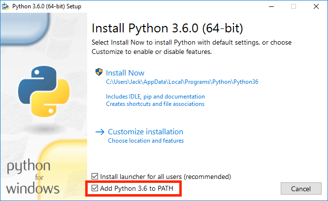

Install Python 3
Python 3 is the primary programming language we will use. The installation process might be a little confusing. 😎 But don't worry! I'll walk you through the details.
Windows Users
For smart windows users, click here and download Python 3.8.2.
MAKE SURE TO CHECK THE "ADD PYTHON TO PATH".
Otherwise, you are DOOMED

Mac Users (Mac sucks 🧐)
Just click here and the it should download automatically.
And I assume there's no Linux user here
Anaconda Download
Anaconda is like the host for Python.So please install it. Otherwise, Python will be homeless🤕.
Click here and go down to where it says "Anaconda 2020.02 for Windows/Mac Installer" and choose the right package.
Make sure to install the Python 3.7 version.